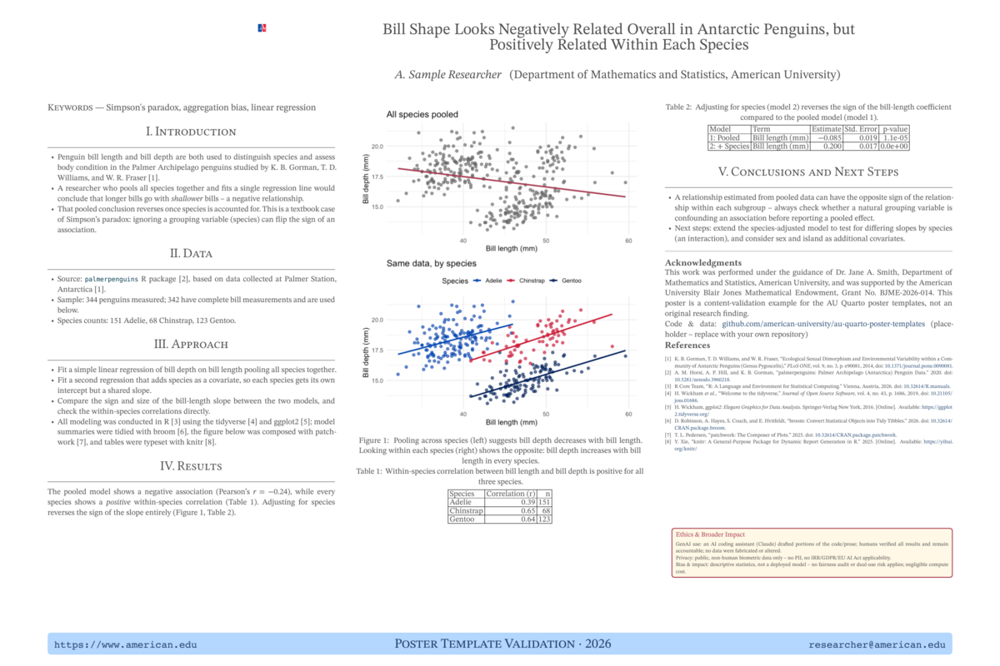
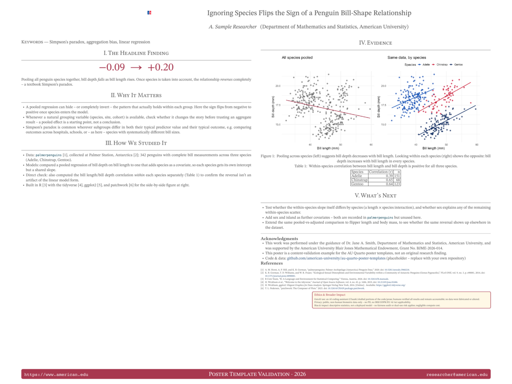
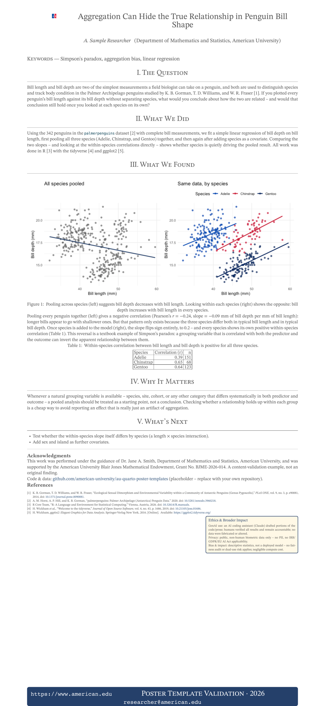
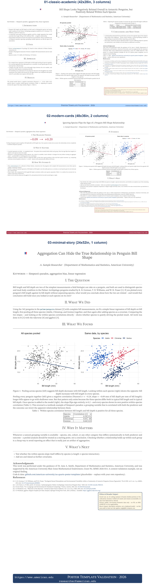

Quarto Conference Posters
A modern replacement for the posterdown/R Markdown poster workflow. There are three templates; each a single .qmd file that renders to two outputs:
| Format | Purpose | Engine |
|---|---|---|
poster-typst |
Large-format print PDF (e.g. 36x24 in) | Typst, via the quarto-ext/typst-templates/poster extension |
html |
Responsive, scrollable “web poster” for posting online | Quarto HTML + custom SCSS |
- Because both formats are declared in one
format:block,quarto render poster.qmdbuilds both versions from the same content in one pass. - Run
quarto render poster.qmd --to poster-typstor--to htmlto build just one.
Templates
The three templates offer different design approaches that may be tailored for a particular purpose.
- All three share the same content structure (level-2
##headings become poster sections/panels automatically) so switching between them is mostly a matter of swapping the YAML/SCSS, not rewriting your text.
templates/01-classic-academic/: traditional 3-column layout (Intro / Methods / Data / Results / Conclusions), serif headings, the closest analog to the old posterdown betterland template.- Print size 42x28 in, 3 Typst columns.

01-classic-academic poster preview templates/02-modern-cards/: dashboard-style card grid with a bold accent color and a.statclass for headlining one big number.- Print size 48x36 in, 2 Typst columns (fewer, larger panels).
- This size doubles as a standard conference board size – see “Choosing a print size” below.
- This template’s content was originally short enough that Typst never started the second column at all (everything landed in column 1, leaving column 2 blank except the floated Ethics panel). Fixed by adding a manual
#colbreak()(raw Typst, right before## Evidence) so the figure/table/“What’s Next” content explicitly starts column 2, plus enough added text/a correlation table to make the two columns’ content roughly comparable to01-classic-academic’s. - The figure itself was always full column width – if you add your own full-page figures, note that
out-width: "100%"measured against the page width rather than the current column’s width immediately after a#colbreak()in local testing, overflowing past the margin; setting an explicit absoluteout-width(e.g."20in") sidesteps it.

02-modern-cards poster preview templates/03-minimal-story/: a single flowing narrative column, meant to be read like a short article; flat design, generous whitespace.- Print size 24x52 in (portrait banner), 1 Typst column.

03-minimal-story poster preview
Each preview above (images/previews/preview-*.png) is a 1200px-wide PNG rendered from that template’s own poster-typst PDF at 300 dpi with magick; like comparison.png below, these aren’t produced by quarto render and need regenerating by hand after content changes.
All three are currently filled in with the same worked example (a Simpson’s-paradox analysis of bill shape across penguin species, using palmerpenguins) so the three visual styles are directly comparable:

comparison.pngis generated by rendering each template’sposter-typstPDF and stacking the three as separate full-width rows (labeled with the template name/size) with the Rmagickpackage.- Rows, not side-by-side columns:
03-minimal-storyis a tall 24x52in portrait banner, while the other two are landscape (42x28in, 48x36in); scaling all three to a common height for a side-by-side layout shrinks the banner to an unreadable sliver, so each poster instead gets its own row at a common width, sized for legibility. - It isn’t produced automatically by
quarto render; regenerate it after editing any template’s content, and re-render eachposter-typstPDF first (quarto render poster.qmd --to poster-typstin each template folder). - Source PDFs are rendered at 300 dpi (print resolution) before compositing, then the full composite is scaled down to a 2000px-wide PNG – crisp when embedded at typical slide/README display sizes while keeping the file size reasonable.
03-minimal-story’s header grid (logo/title column widths) defaults to values sized for wider posters, so its long title overflowed the page margin at the defaulttitle-font-size. Fixed by settinguniv-logo-column-size: 3,title-column-size: 16, andtitle-font-size: 32in that template’s YAML (its 24in width leaves only 20in inside the page’s 2in margins, vs. the extension’s 10in + 20in defaults).
- Rows, not side-by-side columns:
A lesson from filling in the templates: the single-column minimal-story layout has noticeably less capacity per page than the 2- or 3-column layouts. With this same content, it initially overflowed onto a second Typst page at 24x36in;
- The version here (with a per-species correlation table and a “What’s Next” section added, to use the extra room well rather than leave it blank) needs
24x52into stay on one page. - If you adapt this template with less content than that, you can size it down; budget less text per page than you would for the classic or modern-cards versions either way.
Choosing a print size
size: (under poster-typst: in each template’s YAML) takes any Typst-compatible "WIDTHxHEIGHT" in inches – it isn’t tied to a specific venue. - A few sizes recur often enough at ML/data-science conferences that it’s worth calling out how the templates map onto them (all landscape, given as the venue’s own H x W convention next to the equivalent size: string):
| Venue / convention | H x W | size: string |
|---|---|---|
| 3ft x 4ft (a common poster-board default) | 36in x 48in | "48x36" |
| ICML | 36in x 48in (91cm x 121cm) | "48x36" |
| NeurIPS (narrower boards) | 36in x 60in | "60x36" |
| NeurIPS (wider boards) | 36in x 72in | "72x36" |
02-modern-cards already ships at "48x36", so it’s ready for either the generic 3ft x 4ft board size or ICML as-is.
- To target a different size (e.g. NeurIPS), on any template:
- Change
size:to thesize:string from the table (or any other"WxH"you need). - If the aspect ratio changes a lot (e.g. going from 48x36 to 72x36), reconsider
num-columns– wider boards generally read better with one more column than a narrower version of the same layout. - Re-render (
quarto render poster.qmd --to poster-typst) and check for overflow onto a second page or, conversely, excess blank space;
- Adjust
body-font-size, trim/add content, or nudgesize:again as needed. 01-classic-academicand03-minimal-storyaren’t currently tuned to any of the sizes above, so budget an iteration or two if you retarget them.
Ethics & Broader Impact panel
Each template includes an “Ethics & Broader Impact” section, placed directly after the methodology section (Approach / How We Studied It / What We Did), covering the three disclosures increasingly expected at AI/data-science venues:
- Generative AI use – which tool was used, for what (code scaffolding, prose editing, citation formatting), and a statement that the human author(s) remain fully accountable and that GenAI was not used to fabricate or alter the underlying data.
- Privacy & data governance – whether the data contain PII, whether IRB/GDPR/EU AI Act provisions apply, and under what approvals the source data were collected.
- Bias, fairness & broader impact – whether a fairness audit or dual-use/weaponization risk assessment applies, and the computational/environmental cost of the analysis.
The included text is accurate for this demo (public, non-human palmerpenguins biometric data; a simple linear regression, not a deployed model) – treat it as a worked example of the kind of specific, honest statement expected, not boilerplate to copy verbatim. Rewrite each statement for your own project’s actual data, models, and tool use.
The panel is implemented once per format so it renders correctly in both:
- HTML: a
::: {.ethics-panel} :::div (defined inposter-common.scss) – a shaded box with a colored border and ~1.35rem text, larger than surrounding body text for readability. - Print (Typst): a raw
```{=typst}block using#block(..., breakable: false)for the same shaded/bordered look at 20-24pt. breakable: falseis required – without it, Typst can split the block awkwardly across a column break.
Both copies are wrapped in ::: {.content-visible when-format="..."} so only one appears in each output; if you edit the disclosure text, update both copies.
Acknowledgments are now a plain, uncited sentence for funding and mentorship credit,
- This work was performed under the guidance of Dr. Jane A. Smith, Department of Mathematics and Statistics, American University, and was supported by the American University Blair Jones Mathematical Endowment, Grant No. BJME-2026-014.
Each template also has a placeholder Code & data line near Acknowledgments with a GitHub URL to replace with your own repository.
References, Data/software citations appear here automatically when they’re cited in-text with [@key] earlier in the poster . A ready-to-edit example is included in each template.
Adding your own poster
- Copy one of the three
templates/*/folders (or start a new one). - Edit the YAML: title, authors/affiliations,
poster-authors,departments, footer contact info, and pick a printsize(Typst accepts any"WIDTHxHEIGHT"in inches). - Replace the
##sections with your own content. Cite sources with[@bibkey]and add entries toreferences.bib. quarto render poster.qmd— checkposter.pdffor the printable version andposter.htmlfor the web version.
Notes / gotchas
- The vendored
_extensions/quarto-ext/posterhas three local patches. If you re-install/update the extension, re-apply all three:poster.typaccepts the institution logo as already-loaded Typstcontent(loaded once intypst-show.typ) rather than a bare path string, because Typst packages cannot read files outside their own package directory (see the_univ_logo_imghandling intypst-show.typ).poster.typ/typst-show.typadd afooter-text-colorformat option (defaults to white) so the footer text stays legible against darkfooter-colorvalues – set it to a dark color if you pick a light footer background (see01-classic-academic’sfooter-text-color: "25406A").biblio.typ(a new template-partial, registered in_extension.yml) setstitle: noneon the generated#bibliography(...)call, so Typst’s own default “Bibliography” heading doesn’t duplicate each template’s own#### Referencesheading.- Because Quarto caches the vendored local Typst package under each project’s
.quarto/typst/packages/local/typst-poster/, edits toposter.typonly take effect after that cached copy is refreshed (delete.quarto/or copy the updated file over it) – a plainquarto renderwill silently keep using the stale cached version.
- Every template’s
poster-typstformat setsfig-format: png. Without it, Typst’s default (fig-format: svg) asks R’s Cairo graphics device to render each plot, which can fail with a missing X11/Cairo shared-library error on machines without XQuartz (common on Apple Silicon macOS, and on Linux withoutlibcairo2-dev).- Installing XQuartz/
libcairodev packages fixes it at the source;fig-format: pngsidesteps it by using R’s built-in PNG device instead, at a small cost in image sharpness for print.
- Installing XQuartz/
.quarto/, rendered*.pdf/*.typ/poster.html, and*_files/directories are gitignored as build output.